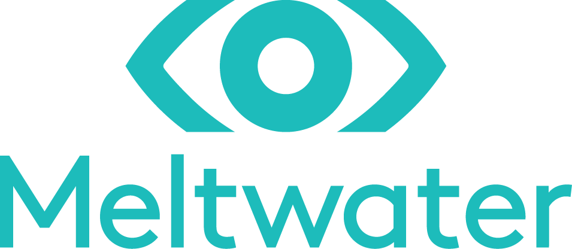

Planhat
Me incorporé para asumir la responsabilidad de QA y de la contratación comercial a nivel global en toda la empresa.
- Internalicé la contratación senior en EE.UU. y Europa, realizando más de 20 incorporaciones en roles comerciales y GTM en menos de 12 meses
- Ayudé a establecer un hub tecnológico en México para aumentar capacidad y reducir costos
- Reconstruí QA como una función más ligera y orientada a automatización, integrada antes en el delivery
Day Digital
Construí una agencia de producto B2B basada en equipos pequeños, entregas más rápidas y poner productos delante de la gente cuanto antes.
- Fundé y construí una agencia de producto B2B, rentable en 3 meses y durante los nueve años completos
- Construí equipos pequeños entregando productos SaaS B2B y rediseños complejos desde la idea hasta el lanzamiento
- Entregué un producto del NHS con aprobación nacional, listado en la plataforma G-Cloud del Gobierno británico y adoptado por más de 70 centros médicos

Meltwater
En Meltwater, a medida que la empresa pasó de 80 personas a ~1.000+, asumí varios retos clave de escalado: poner en marcha Client Relations, liderar una reescritura completa y la migración de datos del producto principal, y después crear un CRM centrado en el cliente desde cero.
- Construí un equipo de ingeniería desde cero y en seis meses lanzamos una plataforma CRM que respaldaba más de $100M en ingresos
- Lideré la reconstrucción y migración completa del producto principal, con más de 100.000 clientes de pago en más de 50 países, re-arquitectándolo para soportar datos sociales a gran escala
- Miembro fundador de Client Relations, ayudando a definir el modelo global y proactivo de customer success